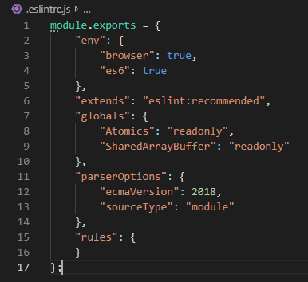

Lint
Linter is a tool that analyzes source code to flag programming errors, bugs, stylistic errors, and suspicious constructs.
At the moment, we are just using ESlint and Stylelint.
ESLint
You can run ESLint on any of you JavaScript file in the web_component folder with the command
npm run lint
This is because there is a reference in the package.json file.
Let's take a look at the eslint.js file.
We are running the recommended option of ESLint. In this file you can modify the rules. Please see the ESLint documentation.
The recommended option uses Airbnb style.
You can disable a rule at any time by commenting /* eslint-disable <=insert you rule here=> */ on top of your line.
You can turn off a rule in the eslint.js file. Just add "<=insert the rule name=>":"off"
StyleLint
Style lint is used for CSS. In the pipeline, we only run it on the files in the web_component folder but feel free to try it out on your files.
the basic structure is already implemented and uses the recommended style.
Husky
We are using husky in our pipeline. It runs the linting phase before any commit to make sure we don't push any bad code!
"pre-commit":"npm run lint && npm run docs"